UserGuide
Brief Introduction to the APP
Welcome to our Shiny App, designed as part of our response to the Mini-Challenge 2 of VAST Challenge 2023. We leveraged on data provided by NGO FishEye International to unveil the opaque operations of companies who might potentially be engaged in illegal, unreported, and unregulated (IUU) fishing which is an increasingly pressing global issue.
Seafood, the world’s largest traded food commodity, is a vital source of sustenance for over 3 billion people. Yet, it is estimated that 85% of fish stocks are either overfished or fully exploited. According to a study conducted by the Financial Transparency Coalition, it found that IUU fishing accounts for one-fifth of the global fisheries’ catches (equivalent to approximately $23.5bn) annually. Global losses arising from IUU fishing are also estimated to be approximately $50bn.
As part of the VAST Challenge 2023, we have developed this app to analyze and gain a deeper understanding on the fishing industries’ import/export data. The data, albeit incomplete, has been transformed into a knowledge graph to understand the complex business relationships as well as identify key patterns and suspicious companies to stop IUU fishing and protect the affected marine species.
Our Shiny App allows you to delve into this challenge dataset and detect potential illegal fishing activities. We employ visual analytics to identify temporal patterns, evaluate suggested links to complete the knowledge graph, and detect new patterns or anomalies post the addition of the identified reliable links.
Please visit VAST Challenge 2023: Mini-Challenge 2 for more information.
We would like to mention our special thanks to Professor KAM Tin Seong for his teaching, guidance, and support for this project.
Application Features
As illustrated via the below diagram, this application has 3 key modules:
Fishing Transaction Overview: This module allows user to gain an overall understanding of the fishing related transactions and patterns. It includes statistics and interactive exploration tools on key attributes such as Countries (shipping and receiving), Transactions, Shipping Variables (Volume – TEU, Weight - Kg etc), HSCODES and HS Categories, as well as temporal changes in activities.
- Fishing Transaction Network: This module provides insights and visualisations in the form of a network graph. It allows the user to interactively explore relationships between nodes and its associated edge connections.
- Bundles Network: This module helps user compare and investigate the usability of the various bundles. You can evaluate the reliability of different bundle set with the predicted knowledge graph links provided by FishEye. Using visual analytics, the user can also visually inspect the quality and accuracy of these bundle sets to determine which ones are the most reliable to complete the graph.
Through the above interactive modules, we aim to reveal hidden patterns and relationships, with the eventual aim of contributing towards the protection of our oceans while ensuring a sustainable management of the fishing industry.
1-1 Fishing Transaction Overview - Country Overview
In Country Overview: You can gain a better understanding on the top shipping countries and receiving countries within the fishing industry.
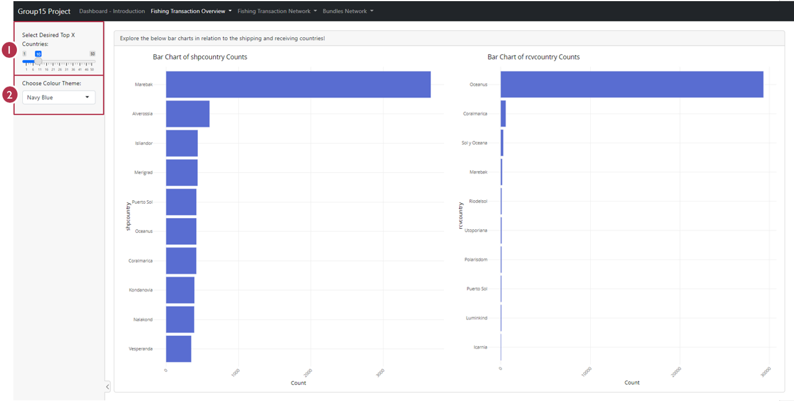
• Control 1: Use this to configure the desired number of top “X” shipping or receiving countries visualisation output
• Control 2: Use this to customize the colour of the bar charts
1-2 Fishing Transaction Overview – Country Trading Patterns
In Country Trading Patterns: You can obtain an overview on the country level trade network and relationships across various years. A deeper understanding of the trade flows can be also obtained by customising the “in” or “out” degree centrality accordingly.

• Control 1: Use this to configure the desired year in scope
• Control 2: Use this to select either “in” or “out” degree centrality
• Control 3: Use this to customise the degree quantile cut for the countries names to appear. For example, selection of 0.75 will enable countries who are > 0.75 to have their countries’ names displayed in the plot output
1-3 Fishing Transaction Overview - Transaction Structure
In Transaction Structure: You can obtain an overall understanding on the data distribution and key statistics (such as median) with the flexibility to select HSCODE and your desired year and variables (for example, Weight (kg), Volume (TEU) etc). You can explore the data distribution via the Packed Bar Chart and Box Plots to identify outlier entities/companies which might be involved in IUU fishing.
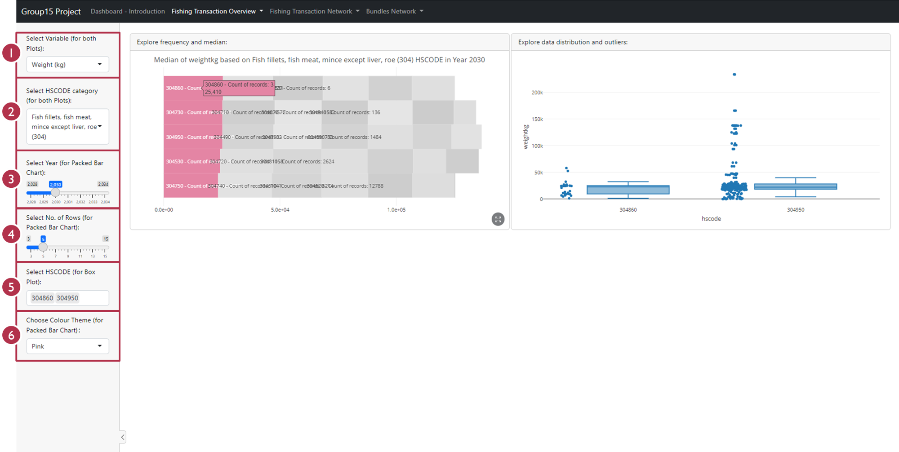
• Control 1: Use this to control which variable you would like to plot against. There are three key variables, namely Weight (kg), Value of Goods (USD) and Volume (TEU). Note that this updates both plots
• Control 2: Use this to configure the HSCODE category for both plots. The options include “Live fish (301)”, “Fish, fresh or chilled, whole (302)” and “Fish, frozen, whole (303)” etc.
• Control 3: Use this to configure the desired year in scope. Note that this updates the Packed Bar Chart
• Control 4: Use this to select the top “X” values for the Packed Bar Chart output
• Control 5: Use this to select the specific HSCODE(s) for further investigation via the Box Plot
• Control 6: Use this to customize the colour of the Packed Bar Chart
Example of usage:
Step1: In 2030, the highest median “Weight – KG” is coming from HSCODE 303430.
Step2: Select HSCODE 303430 for further investigation. You can pick more than one HSCODE for multiple comparison.
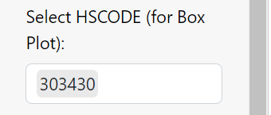
Step3: Mouseover the Box Plot to gain a better understanding on each individual data point to identify companies who are potential outliers. In this case, Costa de Oro CJSC was identified.
Step4: If you wish to investigate other variables, set the variable field to other value (checking Volume Teu), and specify hscode (e.g. 160419), Mar del Este CJSC was found to have super high transaction volume.
Step5: Further check what is dedicated company’s transaction structure,select Mar Del Este CJSC to check the packedBarChart statistics.
1-4 Fishing Transaction Overview – Temporal Analysis
In Temporal Analysis: You can inspect the transaction movement (across various metrics such as Weight (kg), Value of Goods (USD) etc.) across time for specific companies. If there is a sudden variation in the transaction trends, it might be worthy to perform further investigation to potentially identify any suspicious entities.
• Control 1: Use this to control which variable you would like to plot against. There are three key variables, namely Weight (kg), Value of Goods (USD) and Volume (TEU). Note that this updates both the Bar and Line Chart
• Control 2: Use this to configure the desired Source Company for analysis. Note that this only updates the Bar Chart
• Control 3: Use this to configure the desired HSCODE for further investigation. Note that this only updates the Bar Chart
Example of usage:
By using Control 1, you will identify an abnormally high “Weight (kg)” and “Value of Goods (USD)” during August 2034 and June 2032 respectively. This might be an indicator of IUU fishing companies shutting down as a result of being caught.
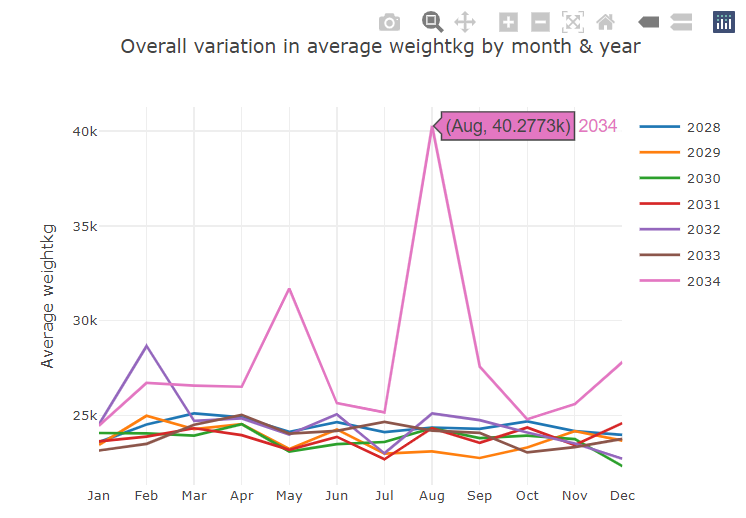
1-5 Fishing Transaction Overview – Heatmap Activity Overview
In Heatmap Activity Overview: You can identify which entities/companies has a higher frequency of transaction. You can also easily pinpoint which are the companies who have sustained activities over a longer time period. At the same time, you can also quickly identify companies with a sudden break in activities, thereby potentially indicating that the company might be involved in IUU Fishing.
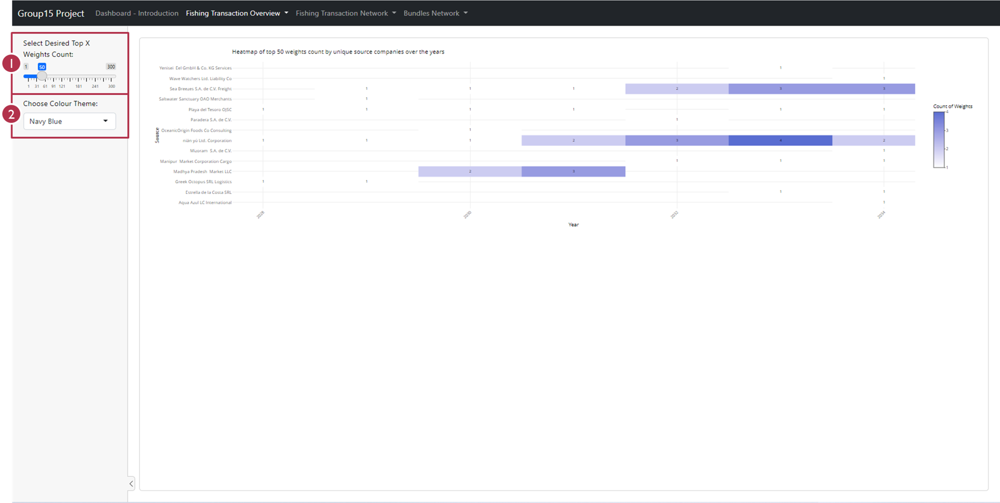
• Control 1: Use this slider to select your desired view on the Top “X” Weights Count
• Control 2: Use this to customise the colour of the Heatmap Plot
Example of usage:
With the Heatmap Plot, you can identify Madhya Pradesh Market LLC as a company that has high network activity during 2030 and 2031, before going silent within the fishing industry. This company might potentially be involved in IUU fishing who closed down as a result of being caught.
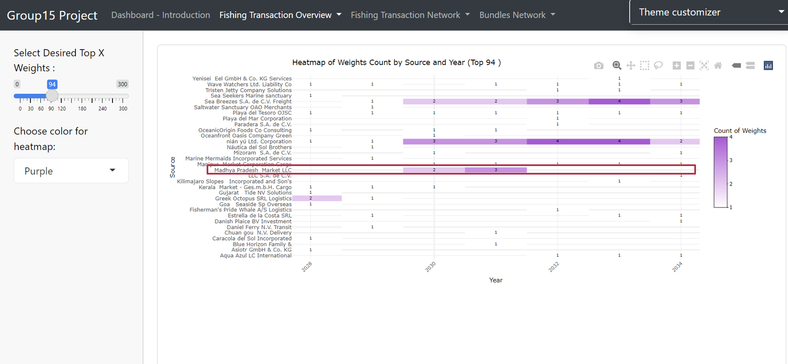
2-1 Fishing Transaction Network – Centrality Plot
In Centrality Plot: You can uncover valuable insights on central entities and influential nodes by selecting your desired centrality metrics, (ranging from betweenness centrality, indegree centrality, outdegree centrality, closeness centrality to eigenvalue centrality) to create a network connection map. With the centrality plot visualisation, you can explore the complex network to gain a deeper understanding of the various entities’ business relationships within FishEye’s knowledge graph.
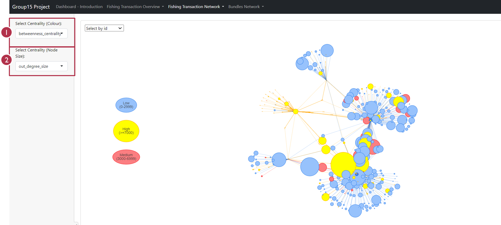
• Control 1: This selection affects the node colour. You can select your desired centrality metric and it will automatically segment the data to high/medium/low centrality range. The nodes will be grouped accordingly into 3 different groups of colours
• Control 2: This selection affects the node size. You can configure the node size to your desired centrality metric as well
Example of usage:
Step1: You can begin by selecting “betweenness centrality” as a base to differentiate the colour of nodes, before proceeding to select “in degree” to illustrate the size of the nodes.
Step2: As a result, you will then find two big nodes with median betweenness centrality (identified via the node colour) and high value for in-degree (identified via the node size). They might be potential big wholesalers who source several maritime products from various fishermen before reselling it to others. | | |You can then proceed to select the two nodes to identify the company names and investigate their relationship with other companies.
As a result, you will find “hai an Corporation Wharf” and its associated suppliers.
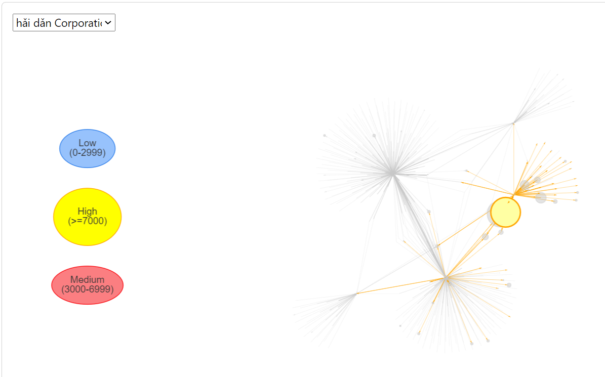
Similarly, you will be able to find “Mar Del Este CJSC” and its associated connections.
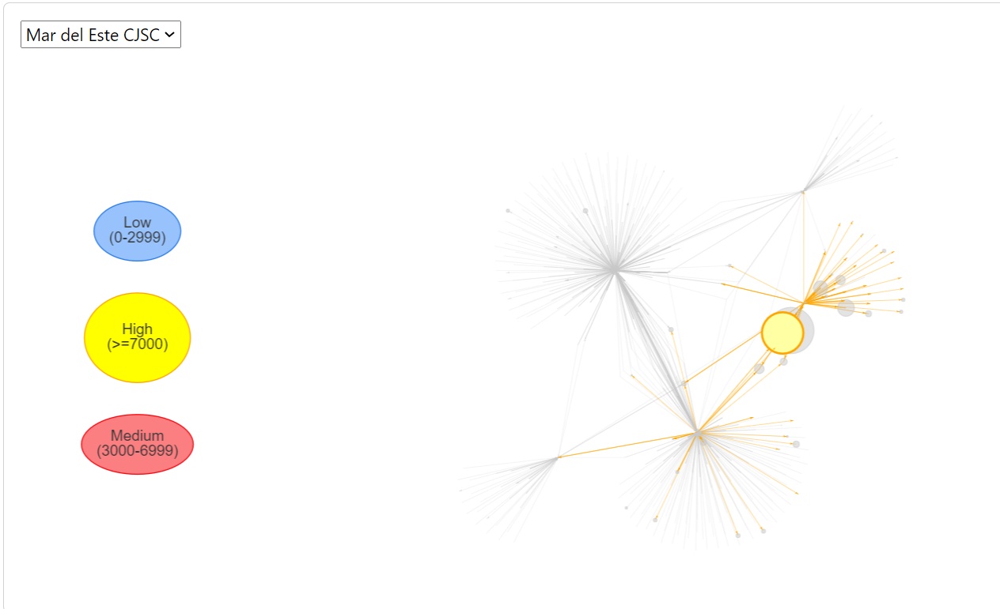
A further investigation reveals an interesting insight where these two companies have similar connection and supply networks.
2-2 Fishing Transaction Network – Main Network Graph
In Main Network Graph: You can interactively leverage on the tabular table and network graph visualisation to discover suspicious companies who might potentially be involved in IUU fishing and further investigate the suspicious nodes’ broader relationship with other companies in the fishing industry.
• Control 1: Use this to select your desired stable threshold value. Note that this updates both Network Plots
• Control 2: Use this to configure the desired HSCODE for further investigation. Note that this updates both plots
• Control 3: Use this to configure the desired year in scope. Note that this updates both plots.
• Control 4: Use this to select the desired Source Company for analysis. Note that this updates only the egoNetwork Plot
• Control 5: Use this to select the desired Graph Layout visualisation
• Network Plot A: Overall network for the selected stable threshold value, HSCODE, year and graph layout
• Network Plot B: Focused egoNetwork plot for the selected company
Example of usage:
Step1: You can leverage on the data table to search for your identified suspicious node company. This will provide you with further details in relation to the company’s HSCODE and Year etc. e.g., Search for hǎi dǎn Corporation Wharf by typing its name within the “source” column of the data table.
Step2: Within the main Network Plot, you can first select your desired HSCODE and Year (identified via the data table), before configuring your desired stable threshold value. When you select 3 as the stable threshold value, this means that all the nodes with equal to /less than 3 years of existence will be regarded as an unstable entity.
With the configurations configured as per the steps above, you can leverage on the Network Plot to visually detect Unstable Supplier or Buyer who might be involved in IUU fishing.

Step3: Upon identifying the “suspicious” company who might be involved in IUU fishing, you can then leverage on the interactive data table to search for your desired company and obtain the HSCODE in scope.
You can also toggle the Network Plot across the years to gain a deeper insight into how the network graph changes over the years.
Finally, for a focused analysis, you can also leverage on the egoNetwork Plot to delve deeper into your desired source companies and its immediate “one-degree” connection.
.png)
3-1 Bundles Network – Bundle Similarity
In Bundles Network: You can explore how each sub bundles (total of 12 sub bundles involving Carp, Catfish, C_Mac, Cod, Herring, Lichen, Mac, Pol, Salmon, Sal_WGL, Shark and Tuna) is similar to the matching plot which also extracts the same links (i.e. same source and target with the corresponding bundle) from MC2 dataset. The visualisation is complemented with a numerical similarity coefficient calculation to validate the visual resemblances and ascertain the reliability of the bundles.
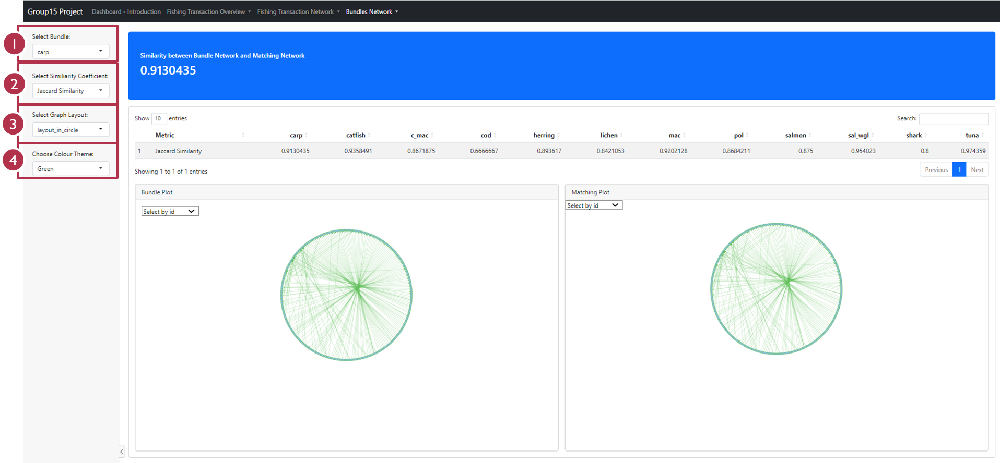
• Control 1: Use this to select your desired bundle
• Control 2: Use this to select your desired similarity coefficient metrics for similarity calculation
• Control 3: Use this to select the desired Graph Layout visualisation
• Control 4: Use this to customise your desired colour for the Network Plot
Example of usage:
Step1: Select your desired Similarity Coefficient via Control 2. This will dynamically update the blue panel with the similarity numerical values.
Additionally, there is also a table that looks at the selected Similarity Coefficient metric across the 12 bundles in a seamless manner. The data table allows users to easily compare the reliability of the bundles.
Step2: Select your desired bundle (e.g., Tuna) via Control 1 to plot out the network diagram for easy visualisation. Edge and border colours within the network graph can also be easily customised via Control 4.
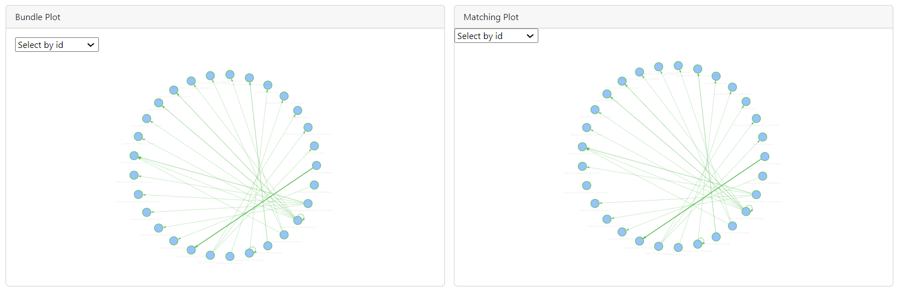
Step3: Select the nodes on the left-hand side (LHS) of the plot. This will interactively highlight the corresponding node (in red colour) on the right-hand side (RHS) of the plot.
You can also leverage on the dropdown field to select your desired company e.g., hǎi dǎn Corporation Wharf
hǎi dǎn Corporation Wharf has similar 1st degree of network connectivity on both the LHS and RHS of the plot.
Step4: By leveraging on the Bundle and Matching plot, you can easily compare and understand what are the nodes that contribute to the key differences between the bundle and its corresponding matching plot.
For example, in the cod bundle dataset, you will observe a missing connection from “-53”.
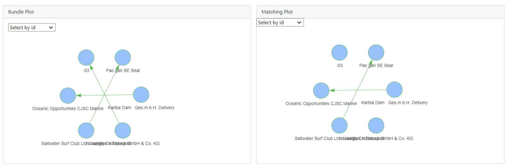
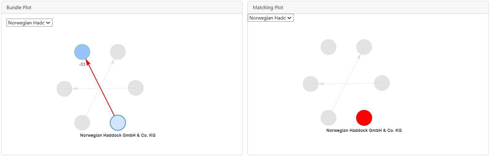
3-2 Bundles Network – Bundle Network Comparison
In Bundle Network Comparison, the reliable bundles which was determined from Section 3-1 Bundles Similarity Overview had its links added into the original dataset to create a new network labelled as “Combined Plot”. You can compare the original network (“Matching Plot”) and the “Combined Plot” visually to identify if adding of the bundle dataset helps to improve or affect the original network in a positive manner. Additionally, you can also visually identify new patterns and/or anomalies that are present in the combined network.
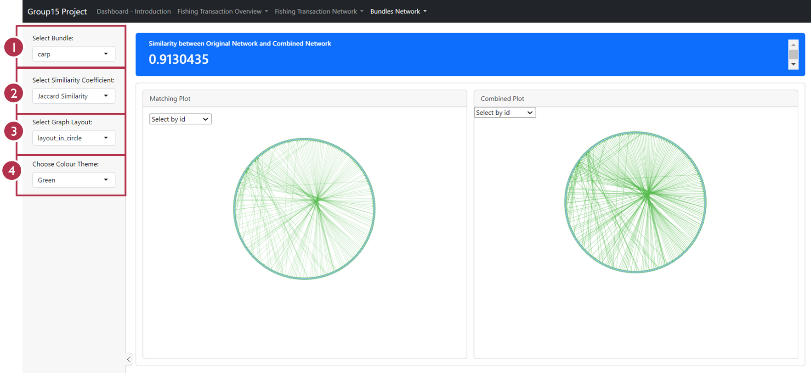
• Control 1: Use this to select your desired bundle
• Control 2: Use this to select your desired similarity coefficient metrics for similarity calculation
• Control 3: Use this to select the desired Graph Layout visualisation
• Control 4: Use this to customise your desired colour for the Network Plot
Example of usage:
Step1: You can begin by selecting your desired bundle (one which you’ve identified as a reliable bundle set within Section 3-1 Bundles Similarity Overview).
Using Carp as an example, you can select your desired similarity coefficient, graph layout and colour scheme to customise your Network Plot for a visual analysis.
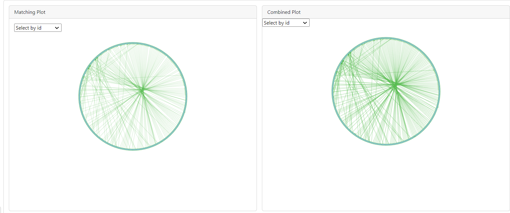
Step2: Mouse over the nodes on either side of the plot (either LHS or RHS) to seamlessly highlight them (note that the same node on the corresponding plot side will be highlighted in red) and visualise how the LHS and RHS plots are different from each other.
You can also leverage on the dropdown field to find the company which you are keen to explore e.g., hǎi dǎn Corporation Wharf.
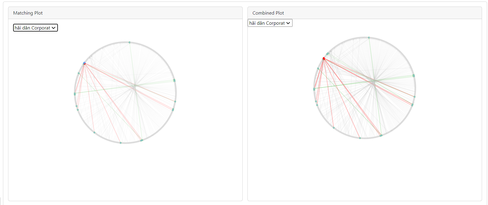
Step3: hǎi dǎn Corporation Wharf has similar 1st degree of network connectivity on both the LHS and RHS of the plot. The key feature of the Bundle Network Comparison enables you to seamlessly and visually identify the difference in nodes connection between the “Original Plot” and “Combined Plot – post adding in the bundle edges”.
Using Lichen bundle as an example, you will observe that the Combined Plot has two new connections for hǎi dǎn Corporation Wharf. Similarly, in the Shark bundle, hǎi dǎn Corporation Wharf has two new connections after weaving in the bundle’s edges.
Lichen bundle:
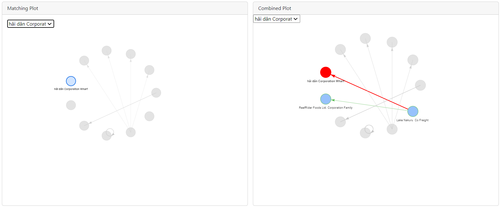
Shark bundle: